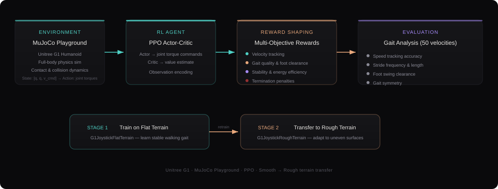
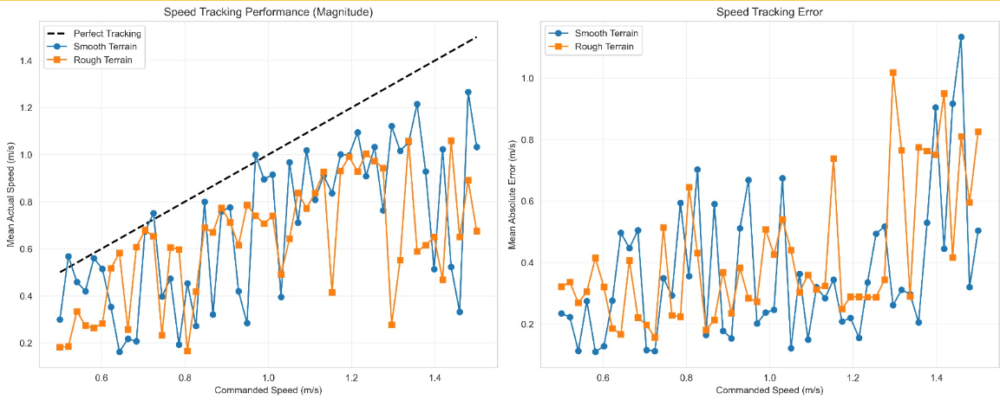
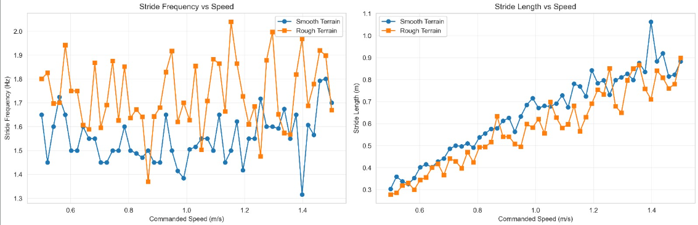

Problem & Motivation
Humanoid robots need to traverse diverse terrain - flat ground, slopes, and rough surfaces without hand-tuned gaits for each condition. Reinforcement learning offers a path to policies that generalize, but training stable bipedal locomotion is notoriously difficult due to the high dimensionality of humanoid dynamics and the narrow stability margins of bipedal walking.
The objective was to analyze how a learned locomotion policy behaves on different terrains and to build the trajectory dataset needed for a unified diffusion-based gait model for the Unitree G1 humanoid.
Simulation Environment
The Unitree G1 humanoid was modeled in MuJoCo Playground using an MJCF definition that captures the full kinematic structure (links, joints), physical properties (mass, inertia, material friction), actuator models (motors, gear ratios, torque limits), and onboard sensors (IMU, encoders). The MuJoCo physics engine solves the Lagrangian dynamics at each timestep, handling contact dynamics and enforcing joint constraints.
Two terrain environments were used: G1JoystickFlatTerrain for initial policy training, and G1JoystickRoughTerrain for transfer and fine-tuning. The policy observes the state vector s = [q, q̇, v_desired] and outputs joint torques.
RL Approach & Reward Design
A PPO (Proximal Policy Optimization) actor-critic architecture was trained with a carefully designed multi-objective reward function. The reward balances velocity tracking against gait quality, stability, energy efficiency, and safety penalties. The policy was first trained on flat terrain, then retrained on rough terrain to develop terrain-adaptive behavior.

Key reward components included linear and angular velocity tracking terms, gait quality rewards (feet airtime, clearance, phase coordination, slip prevention), stability terms (body orientation, joint torque minimization), and penalties for termination, standing still, and undesired vertical or angular motion.
Speed Tracking Performance
The trained policy was evaluated across 50 commanded velocities (0.5–1.5 m/s) on both smooth and rough terrain. The results show how well the robot tracks commanded speeds and the magnitude of tracking error across terrain types.

Gait Analysis — Stride Characteristics
Stride frequency and stride length were analyzed as a function of commanded speed to understand how the learned gait adapts. On smooth terrain, the robot primarily increases stride length to walk faster, while stride frequency remains relatively stable. On rough terrain, both metrics show more variability as the policy adapts to uneven footing.

Foot Swing Analysis
The foot swing peak height reveals how the policy handles ground clearance at different speeds and terrain conditions. At low speed (0.5 m/s), the gait is compact with consistent clearance. At higher speed (1.5 m/s), swing height increases to maintain clearance, with more variability on rough terrain as the policy reacts to surface irregularities.


What I Learned
This project deepened my understanding of reinforcement learning for physical systems in several concrete ways. Reward engineering is where the real work happens, the multi-objective reward function required careful balancing of competing objectives (track speed vs. minimize energy vs. maintain stability). Small changes in reward weights produced dramatically different gaits.
The smooth-to-rough terrain transfer also highlighted the challenges of policy generalization: a policy that works perfectly on flat ground develops habits (like minimal foot clearance) that fail on uneven terrain. Retraining with terrain randomization produced more robust but slightly less efficient gaits, a classic robustness-performance tradeoff that mirrors what I've seen in classical control design.